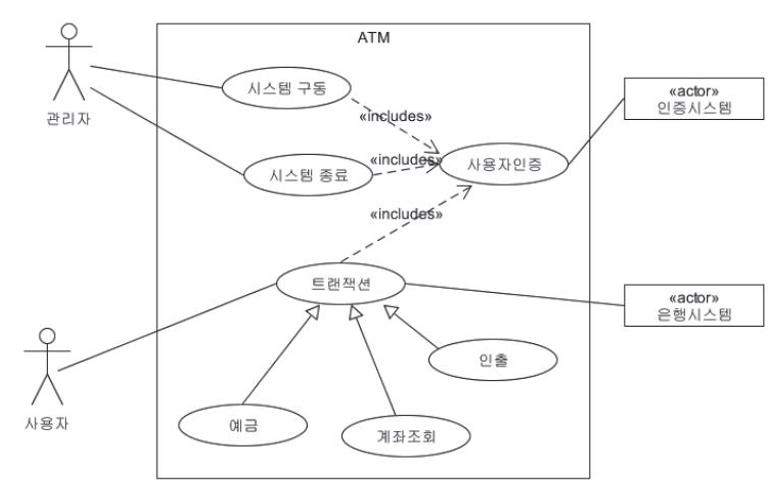
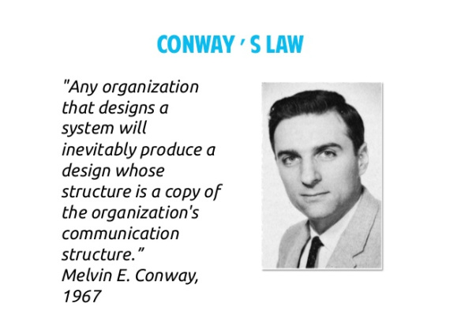
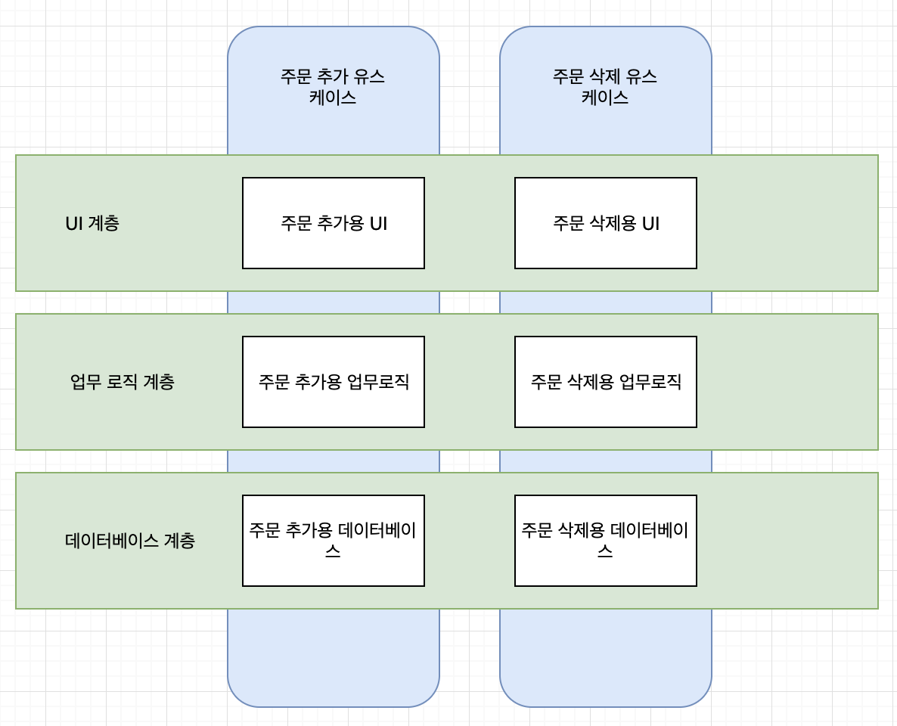
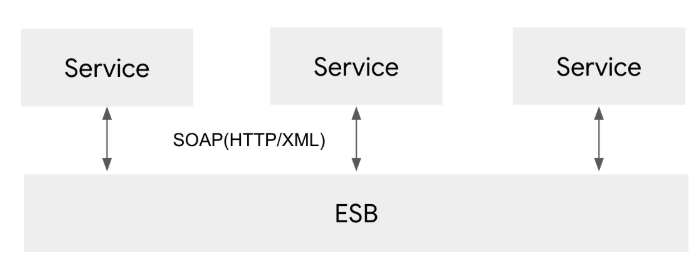

좋은 아키텍처가 지원해야 하는 것들
- 시스템의 유스케이스
- 시스템의 운영
- 시스템의 개발
- 시스템의 배포
유스케이스

유스케이스 다이어그램
시스템의 아키텍처는 시스템의 의도를 지원해야 한다. 시스템이 장바구니 애플리케이션이라면, 장바구니와 관련된 유스케이스를 지원해야 한다.
아키텍처에게 유스케이스가 최우선이다.
좋은 아키텍처는 행위를 명확히 하고 외부로 드러내며, 이를 통해 시스템이 지닌 의도를 아키텍처 수준에서 알아보게 만드는데 목표를 둔다.
행위는 클래스, 함수, 모듈로서 아키텍처 내의 핵심적인 위치를 차지하며 기능을 분명히 드러내는 이름을 가져야 한다. 이 때문에 개발자는 일일이 행위를 찾아해매지 않아도 된다.
(21장 소리치는 아키텍처 참조)
유스케이스란?
바로 사각형 안의 동그라미이다. 시스템이 어떤 서비스, 기능을 제공하는지 명세해 주는 것을 말한다. 위의 유스케이스 다이어그램에서는 ATM 시스템은 예금, 조회, 시스템 구동 등의 기능을 제공해야 한다는 의미이다.
운영
시스템이 초당 100,000명의 고객을 처리해야 한다면?
아키텍처는 이 요구와 관련된 각 유스케이스에 걸맞은 처리량과 응답시간을 보장해야 한다. 또한 이런 운영 작업을 허용할 수 있는 형태로 아키텍처를 구조화 해야 한다.
시스템을 구조화 하는 방식으로는
- 작은 서비스들을 배열하여 다수의 서버에서 병렬로 실행
- 다수의 스레드가 단일 프로세서에서 실행
- 독립된 주소공간에서 실행되는 소수의 프로세스
- 단일 프로세스에서 실행되는 단일 프로그램
아키텍처에서 각 컴포넌트를 적절히 격리하여 유지하고, 컴포넌트 간 통신 방식을 특정 형태로 제한하지 않아야 운영에 대한 요구사항 변경에 있어 전환이 쉽다.
개발

콘웨이의 법칙
시스템을 설계하는 조직이라면 어디든지 그 조직의 의사소통 구조와 동일한 구조의 설계를 만들어 낼 것이다.
아키텍처는 개발환경을 지원하는데 있어 핵심적인 역할을 수행한다.
배포
아키텍처는 배포 용이성을 결정하는 중요한 역할을 한다.
- 목표는 “즉각적인 배포(immediate deployment)”
- 좋은 아키텍처는 시스템이 빌드 된 후 즉각 배포할 수 있도록 지원해야 한다. 이러한 아키텍처를 만들기 위해 시스템을 컴포넌트 단위로 적절하게 분할하고 격리시켜야 한다.
- 마스터 컴포넌트 : 시스템 전체를 하나로 묶고 각 컴포넌트를 올바르게 구동하고 관리해야 함
선택사항 열어놓기
좋은 아키텍처는 선택사항을 열어 둠으로써 향후 시스템에 변경이 필요할 때 어떤 방향으로든 쉽게 변경할 수 있도록 한다.
계층 결합 분리
아키텍트는 유스케이스 전부를 알지 못하지만 시스템의 기본적인 의도는 분명히 알고 있다.
예를 들어 시스템이 장바구니 시스템인지, 자재 명세서 시스템인지, 주문처리 시스템인지 알고 있다.
따라서 아키텍트는 SRP 와 OCP 를 통해 의도와 맥락에 따라 다른 이유로 변경되는 것들을 분리하고 동일한 이유로 변경되는 것들은 묶는다.

이러한 계층의 예로를 UI, 애플리케이션에 특화된 업무 규칙, 애플리케이션과는 독립된 업무 규칙, 데이터베이스 등을 들 수 있다. 이로써 시스템을 서로 결합하지 않은 수평적인 계층으로 분리할 수 있다.
유스케이스 결합 분리
서로다른 이유로 변경되는 것은 유스케이스 그 자체도 있다.
예를 들어 주문 입력 시스템에서 주문을 추가하는 유스케이스와 삭제하는 유스케이스는 다른 속도로, 다른 이유로 변경된다.
유스케이스는 시스템의 수평적인 계층을 가로지르도록 자른, 수직의 조각이다.
시스템에서 서로 다른 이유로 변경되는 요소들의 결합을 부리하면 기존 요소에 지장을 주지 않고도 새로운 유스케이스를 계속해서 추가 할 수 있다. 또한 유스케이스를 뒷받침하는 UI와 데이터베이스를 서로 묶어 각 유스케이스에 AOP를 적용한다면 새로운 유스케이스의 추가가 기존의 유스케이스에 영향을 주는 일은 없다.
결합 분리 모드
유스케이스를 위해 수행하는 결합분리 작업들은 운영에 도움이 된다. 단 결합을 분리할 적절한 모드를 잘 선택한다면!

SOA
마이크로서비스
서비스 지향 아키텍처 SOA
때때로 컴포넌트를 서비스 수준까지도 분리해야 하지만 좋은 아키텍처는 선택권을 열어둔다. 결합 분리 모드는 여러 선택지 중 하나이다.
개발 독립성
컴포넌트가 완전히 분리되면 팀 사이의 간섭은 줄어든다. 기능팀, 컴포넌트팀, 계층팀 혹은 또다른 팀이 있다하더라도 계층과 유스케이스의 결합이 분리되는 한 시스템 아키텍처는 팀 구조를 뒷받침 할 수 있다.
배포 독립성
유스케이스와 계층의 결합이 분리되면 배포 측면에서도 고도의 유연성이 생긴다. 결합을 제대로 분리했다면, 운영중인 시스템에서도 런타임에 새로운 jar 파일이나 서비스를 추가하여 계층과 유스케이스를 교체 할 수 있다.
중복
- 진짜 중복 : 동일한 변경이 인스턴스의 모든 복사본에 반드시 적용되야 함.
- 거짓된, 우발적 중복 : 코드가 서로 다른 속도와 다른 이유로 변경된다면 진짜 중복이 아니다.
유스케이스를 수직으로 분리할 때 비슷한 화면구조, 비슷한 알고리즘, 비슷한 데이터베이스 쿼리, 스키마를 가지고 있다면 조심해야 한다. 자동 반사적으로 중복을 제거하고 싶은 유혹을 떨쳐내라. 중복이 진짜 중복인지 반드시 확인해야 한다.
계층을 수평으로 분리하는 경우 데이터베이스 레코드를 그대로 UI 까지 전달하고 싶다는 유혹이 든다면 조심해야 한다. 대부분 확실히 우발적이다. 뷰 모델을 별도로 만들어 계층 간 결합을 적절히 분리해야 한다.
결합 분리 모드 다시
계층과 유스케이스를 분리하는 방법
- 소스 수준 분리 모드 : 소스 코드 모듈 사이의 의존성 제어.
하나의 모듈이 변하더라도 다른 모듈을 변경하거나 재컴파일 하지 않도록 만들수 있다. (예 루비 Gem)모노리틱 구조
모든 컴포넌트가 같은 주소 공간에서 실행, 통신 시 간단한 함수 호출 사용. 컴퓨터 메모리에는 하나의 실행 파일만 로드.
- 배포 수준 분리 모드
jar 파일, DLL, 공유 라이브러리 같이 배포 가능한 단위들 사이의 의존성을 제어 해 한 모듈의 소스코드가 변하더라도 다른 모듈을 재빌드하거나, 재배포 하지 않도록 만들 수 있다.
많은 컴포넌트가 같은 주소공간에상주하며 함수 호출을 통해 통신한다. 또한 어떤 컴포넌트는 동일한 프로세서의 다른 프로세스에 상주하고, 프로세스 간 통신, 소켓, 또는 공유 메모리를 통해 통신할 수 있다.
- 서비스 수준의 분리 모드
마이크로 서비스
의존하는 수준을 데이터 구조 단위까지 낮춰 네트워크 패킷을 통해서만 통신하도록 한다. 모든 실행 가능한 단위는 소스와 바이너리 변경에 대해 서로 완전히 독립적이게 된다.
프로젝트 초기 단계는 어떤 모드가 최선인지 알기 어렵다. 프로젝트가 성숙해 갈수록 최적인 모드가 달라질 수 있다.
어떤 방법을 사용해야 할까?
컴포넌트가 서비스화 될 가능성이 있다면 컴포넌트 결합을 분리하되, 서비스가 되기 직전에 멈추는 방식을 추천한다. 그리고 컴포넌트들을 가능한 한오랫동안 동일한 주소 공간에 남겨준다. 이를 통해 서비스에 대한 선택권을 열어 둘수 있다.
초기 소스코드 수준 분리 -> 배포, 개발의 이슈발생 시 배포수준까지 분리 -> 운영적 이슈 증가 시 서비스 수준으로 시스템 변경
좋은 아케텍처는 아래의 시스템 구조를 진행 가능하게 또는 원래의 구조로 되돌릴 수 있도록 해야한다. 또한 이러한 변경으로부터 소스 코드를 보호하고, 결합 분리 모드를 선택사항으로 남겨두어 적합한 모드를 사용할 수 있게 만들어야 한다.
모노리틱 구조의 단일 파일로 배포 <-> 독립적 배포 가능한 단위들의 집합 <-> 독립적인 서비스나 마이크로서비스 수준까지 성장
결론
시스템의 결합 분리모드는 시간이지나면서 바뀌기 쉬우며, 뛰어난 아키텍트라면 변경을 예측하여 무리없이 반영할 수 있도록 만들어야 한다.